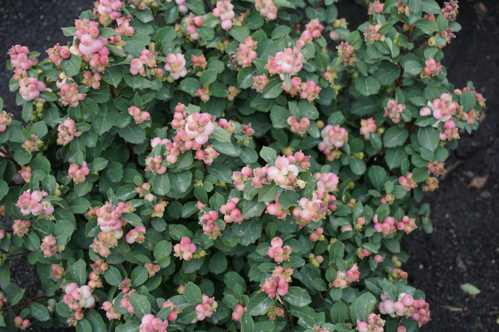
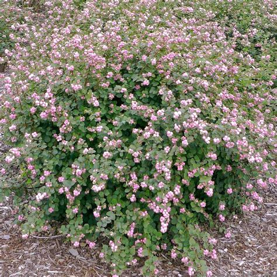

Snowberry/Waxberry (Symphoricarpos spp.)
Fruit: ts’ex̱w, Bush: ts’ex̱wts’x̱wáy̓


Planting
Snowberry/Waxberry is a versatile shrub that grows well in various soil types. Here's how to plant snowberry:
- Choose a location with full sun or partial shade.
- Prepare the soil by removing weeds and loosening it.
- Dig a hole slightly larger than the root ball and place the plant in the hole.
- Backfill the hole with soil and gently firm it around the plant.
- Water the plant thoroughly after planting and maintain regular watering until established.
Usage
Snowberry/Waxberry has ornamental and ecological uses:
- The berries of snowberry/waxberry add visual interest to the landscape.
- The plant is often used in native plant gardens and naturalized areas.
- Snowberry provides food and cover for birds and small mammals.
Environmental Impact
Snowberry/Waxberry contributes to the ecosystem in the following ways:
- The shrub attracts pollinators, including butterflies and bees.
- Snowberry helps prevent soil erosion and provides habitat for beneficial insects.
- The plant supports biodiversity and enhances the beauty of natural areas.